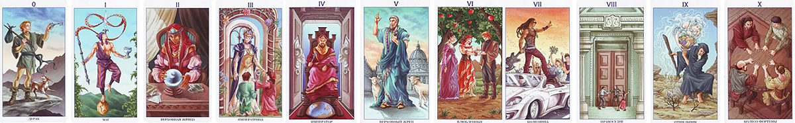
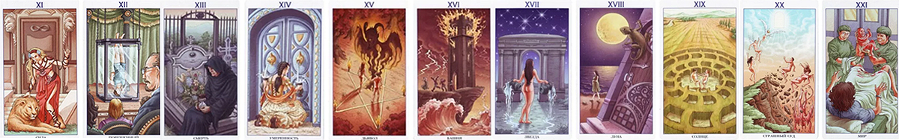

ДУРАК
Все установленные правила опрокинуты. Вам предстоит получить совершенно новый творческий опыт, зачастую довольно хаотичный. Однако, он не очень поможет найти правильный ключ.
Дверь – Ситуация отсутствия логики и плана действий при внутренней готовности сделать первый шаг.
Ключ – Проявить легкость. Начать движение навстречу будущему.
Прямое положение. Желание, потенциал. Готовность проявить действие. Нелепая ситуация; непредвиденные обстоятельства; поиск приключений. Легкость, оптимизм. Небольшая глупость, не приносящая вреда. Бестолковость. Любознательность. Витание в облаках; романтичный настрой. Путешествие. Если есть друг способный оказать поддержку или просто дать совет, то стоит принять поддержку и прислушаться к совету. Человек не так прост, как кажется, у него есть и поддержка и даже некоторая подготовленность. Неожиданное событие. У вопрошающего имеется ключ к решению проблем, ключ от Вселенной.
Перевернутое положение.
Нерешительность, неопределенность. Безразличие. Поддержка друзей отсутствует, также может быть дурное влияние близкого окружения, никчемные советы. Незрелость; незнание куда двигаться дальше. Может быть высокий уровень безответственности.
МАГ
Дверь открывается на тропу, полную возможностей, и чтобы их использовать, Вам предстоит освоить навыки Мага и иллюзиониста. Для этого Вам придётся потрудиться, на что уйдёт много времени.
Дверь – Ситуация открытая, перспективная, дающая возможность реализоваться.
Ключ – Проявить способности, показать другим свое мастерство, начать новое дело или процесс обучения.
Прямое положение.
Импульсивность, энергичность, активность, быстрота. Мастерство; навык, приобретенный упорным трудом, желанием достичь цели. Уверенность в своих силах. Активность. Перспективность. Движение, сконцентрированное на себе, на своих возможностях. Умение управлять стихиями. Способность заниматься сразу несколькими делами. Балансирование на гране способностей, кажущихся невозможными для осуществления. Существует вероятность некоторой уязвимости, неустойчивости.
Перевернутое положение.
Недостаточный профессионализм. Трудности в проявлении своих способностей. Неискренность, поверхностность, лживость, мошенничество. Либо злоба, агрессия, либо слабость, бездеятельность и инфантильность. Плохое начало. Непрофессионализм; неумение вести дела.
ЖРИЦА
Дверь открывается к знаниям. Перспектива ваших будущих свершений и драм жизненного пути разворачивается перед вашими глазами. Если Вы будете терпеливы, сдерживая свои желания, это видение поможет Вам и станет хорошим советчиком.
Дверь – Неизвестность, тайны, будущее пока не в полной мере прояснилось.
Ключ – Проявить интуицию, действовать с помощью оккультных практик самому, либо при содействии специалистов.
Прямое положение. Духовная мудрость, знания. Обладание тайной. Дар предвидения, понимания истины. Стремление к развитию внутренних сил, внутреннего дара, способностей, связанных с предчувствием, с ясновидением и т. п. Предрасположенность к оккультным практикам.
Двойственность, епредсказуемость; однако, в большинстве случаев, Аркан указывает на открытие тайн. Может советовать задать вопрос еще раз, либо сделать попытки разобраться в ситуации, то есть попытаться открыть то, что ранее являлось тайной.
Перевернутое положение.
Неумение пользоваться интуицией. Искаженное видение ситуации или не видение таковой. Недоверие. Обманные, неверные предсказания. Разочарование; обманутые надежды. Также как и в прямом положении, карта может советовать задать вопрос еще раз, однако, не советует целенаправленно раскрывать то, что является скрытым.
ИМПЕРАТРИЦА
Дверь открывается в сад эмоций и красоты. У Вас есть возможность увидеть наиболее важные вехи и направления вашего пути. Карта также может указывать на юную мать или нового друга.
Дверь – Улучшение материального положения; участие, поддержка со стороны в реализации ваших замыслов.
Ключ – Принять помощь, действовать открыто и смело.
Прямое положение. Обращение к кому-либо кто старше и опытнее. Материальная обеспеченность; прибыльность. Достижение уровня благополучия выше, чем ожидалось. Улучшение ситуации, перспектива роста во всех областях. Отношения переходят на новый, приносящий выгоду, уровень. Плодовитость во всем. Подмога от старшего по возрасту, опытного человека (женщины). Разумное решение, мудрость, добрый совет. Вежливость, радушие, гостеприимство, умение очаровывать.
Перевернутое положение. Отсутствие поддержки от человека (женщины) на которого вы рассчитывали. Пренебрежение, самодовольство. Препятствия. Бесперспективность. Споры, разногласия, непонимание. Несогласованные действия. Ненадежные партнеры.
ИМПЕРАТОР
Император распахивает двери королевства успеха и безопасности. Законченные планы и хороший бизнес создадут Вам устойчивое положение. Знатное лицо или состоятельный жених.
Дверь – Стабильность; содействие в решении Ваших вопросов человека, имеющего более высокий социальный статус.
Ключ – Принять помощь, держать себя уверенно, проявить самостоятельность, твердость.
Прямое положение. Стабильность, устойчивость, стойкость. Принадлежность к властным структурам. Поддержка сильного, целеустремленного человека. Возможность достичь признательности, известности, влияния на окружающих, престижа. Желание властвовать или доминировать. Постоянство, практичность, консерватизм. Достижение цели, но, тем не менее, Ваши действия могут быть несколько ограниченны.
Перевернутое положение. Состояние устойчивость проходит. Неуверенность, нежелание действовать, принимать решения. Потеря власти. Поражение. Страх перед властными структурами. Пренебрежительное отношение к вопрошающему. Конфликтность.
ВЕРХОВНЫЙ ЖРЕЦ
Вам даются ключи к духовному росту. Вы можете смело довериться авторитетному лицу, руководителю. Это также может быть наш внутренний голос и небесный Учитель.
Дверь – Ситуация духовного развития, принятия новых развивающих идей, также способность делиться своими мыслями с другими.
Ключ – Действовать через моральные, божественные проявления.
Прямое положение. Высокое проявление духовности. Возможность вести за собой. Сострадание. Обладание знаниями, истиной, также желание и возможность делиться ими. Вера в высшие духовные силы. Доброта, почтительность, благоговение, благородство, терпимость, мудрость, заботливость. Открытие истины. Дружеские отношения. Основанные на единстве мнений, на единстве мировоззрения. Приверженность традициям, условностям. Понимание; умение хранить тайны. Лекторство.
Перевернутое положение. Ложные идеалы; отсутствие духовности. Неумение вести за собой. Лицемерие. Слепая вера; бездумное следование традициям, в том числе религиозным. Непонимание. Нежелание делиться знаниями.
ВОЗЛЮБЛЕННЫЕ
Выбор правильной двери в вопросах любви может оказаться более трудным, чем ожидалось. Возможны небольшие препятствия или «любовный треугольник.
Дверь – Попытка найти правильный путь, принять верное решение в сложившихся обстоятельствах.
Ключ – Обратиться к гадалкам, прорицателям, либо просто прислушаться к своему внутреннему голосу и спокойно начать искать выход из двойственной ситуации самому.
Прямое положение. Часто процесс гадания как таковой. Посредничество. Обращение за помощью к сторонним лицам. Желание разобраться в отношениях. Открытость, поддержка. Последовательное, планомерное решение вопросов. Вам предоставляется выбор, влияющий дальнейший на жизненный путь, отсюда колебание (не неуверенность) в принятии решений. Испытание; проверка чувств, проверка жизненной позиции. Союз, партнерство, любовь, однако, существует вероятность измены.
Перевернутое положение. Ошибочные предсказания. В отношениях разногласия. Выбор сделан, и события начинают разворачиваться достаточно быстро. Лживость, отсутствие доверия. Ревность. Попытки, вероятно не очень удачные, исправить создавшееся положение вещей. Неумение прислушиваться к советам. Перекладывание ответственности в принятии решений и перекладывание своих проблем на других.
КОЛЕСНИЦА
Почести и благополучие, двери успеха распахиваются, и все, что Вам остается сделать – войти и пожинать плоды. Продолжайте верить в себя и не отказывайте в помощи тем, кто менее удачлив.
Дверь – Успех, уверенность в собственных силах. Вами восхищаются и ценят Ваши способности.
Ключ – Наслаждаться плодами своих достижений.
Прямое положение. Достижение цели. Успех, признание, слава. Уверенность в собственных силах; стремление к успеху. Активность, энергичность, амбициозность. Готовность отправиться в путь. Путешествие, отъезд. Динамика развития событий. Талант; востребованные способности. Желание быть в центре внимания. Удачное завершение дела, поднимающее на новый уровень.
Перевернутое положение. Препятствия в достижении цели. Трудности; дорожные трудности. Неблагоприятный исход поездки. Не успешность. Зависть к достижениям других. Невостребованный талант или недостаток таланта. Амбиции без основания. В отношениях конфликты, разрушение союза, непонимание.
ПРАВОСУДИЕ
Если Вы следовали по дороге честности, у Вас нет причин опасаться чего-либо от двери Правосудия. Энергично беритесь за решение своих проблем и в тот момент, когда Вы этого меньше всего ожидаете, Вы найдете мудрых людей, которые готовы дать благой совет.
Дверь – Высшая Божественная Справедливость превыше бытовой суеты.
Ключ – Не тратить силы на склоки и выяснения отношений, т.к. справедливость итак будет на Вашей стороне.
Прямое положение. Стремление достичь цели законным, справедливым путем. Согласие, понимание. Благоприятное решение дел, связанных с законом. Разумный подход, система, некая основа, которые урезонивают эмоции, также примеряют людей. Оценка происходящего. Иногда ощущение себя незначительным в какой-либо системе; понимание того, что попытки изменить ситуацию могут не принести результата.
Перевернутое положение. Ссоры, скандалы, конфликты. Несправедливость. Неудачи, неприятности, несущие с собой обиду на судьбу, разочарование, ощущение опустошенности. Судебные неприятности; несправедливые обвинения. Противозаконные действия. Может быть, наплевательское отношение к правилам, к закону.
ОТШЕЛЬНИК
Непостоянно закрытые двери означают кратковременное ожидание удачных обстоятельств или указывают на возможность самостоятельно открыть другую дверь во внутреннюю область. Эта карта отмечает период внутреннего самоанализа, когда одиночество не означает самоизоляцию.
Дверь – Ситуация отказа от предлагаемых благ в процессе поиска истины.
Ключ – На пути к духовному росту соизмерять количество взятых на себя ограничений с реально необходимыми ограничениями для этого роста.
Прямое положение. Отказ от удовольствий, непринятие естественных радостей. Поиск духовного просветления. Аскетизм ради высокой цели. Одиночество, попытки защитить себя от внешних влияний. Высокие моральные устои, благоразумие, сдержанность, целомудрие. Внутренняя сила, целеустремленность. Может быть недовольство происходящим изза несоответствия собственным представлениям о жизненных ценностях.
Перевернутое положение. Слепая вера; непримиримое отношение к окружающим вещам, людям и событиям. Женоненавистничество. Препятствия на пути достижения цели. Слабость. Может быть вынужденное общение, не приносящее ни радости, ни пользы. Очень маленький доход, нищета.
КОЛЕСО ФОРТУНЫ
Дверь нового этапа открыта к преобразованию, процессу изменения, возможности, которую нельзя пропустить. Мирно переплывайте в новое на волнах изменяющейся судьбы.
Дверь – У Вас достаточно внутренних сил и средств для привлечения удачи.
Ключ – Не пренебрегать помощью единомышленников и не гнушаться применением магических действий для привлечения в Вашу жизнь удачи.
Прямое положение. Благоприятный шанс, который дается судьбой. Однако, Вам придется действовать (принимать решения) и результат Ваших действий нельзя точно оценить. В какой-то момент необходимо подумать о необходимости того, что идет Вам в руки, прислушаться к внутреннему голосу. Возможно, в ситуации участвуют другие люди, от которых также зависит исход события. Карта изобретательного поведения, также просто надежды на удачу, везение. Даже если некий шанс будет упущен, расстраиваться не придется, т.к. сохранится положительный настрой и ожидание чего-то большего.
Перевернутое положение. Жульничество, обман, попытка воспользоваться неопытностью. Следует подумать, прежде чем рисковать и не следует полностью полагаться на удачу. Люди, замешанные в ситуации, могут подвести, либо просто не окажут ожидаемой помощи. Вероятно, благоприятный шанс будет упущен, либо им воспользуется кто-то другой. Возможно торможение в достижении цели; что-то будет мешать. Однако, карта говорит о нестабильности и переменах в настроении.
СИЛА
Львы, охраняющие дверь Силы, могут вызывать опасение или быть Вашими лучшими союзниками. Вы имеете возможность использовать свои инстинкты, преобразовывая их в будущую силу воли и самообладание.
Дверь – Нахождение баланса между животными инстинктами и разумным поведением.
Ключ – Вы уже почти достигли цели. Продолжайте действовать, разумно совмещая такт, осмотрительность и смелость.
Прямое положение. Взаимодействие, контактность принесут пользу. Благоприятная обстановка на работе, в бизнесе. Необходимость действовать, проявляя внимательность, деликатность, чуткость. Внутреннее понимание того, что ситуация предопределена свыше. Может быть плановая ситуация. Карта сильной, разумной личности. Способность управлять, доминировать без оказания явного давления на партнера. При соответствующих вопросах карта означает секс.
Перевернутое положение. Неумение извлекать пользу из общения, контактов. Работа, не приносящая удовлетворения. Исполнение второстепенных ролей; личность – незначительная, подавленная. Недостаток энергичности, предприимчивости. Невнимательность, грубость. Вероятны ссоры и разлад в сексуальных отношениях.
ПОВЕШЕННЫЙ
Вы можете почувствовать невозможность найти правильный ключ и не владеете ситуацией. Ваше время еще не пришло. Требуется время, чтобы прошлое смоделировало будущее. Будьте уверенны – дверь откроется вовремя.
Дверь – Для достижения цели необходим новый, может быть противоположный взгляд на вещи; не сидеть на месте, действовать.
Ключ – Необходимо действовать в экстремальных условиях или воплощая неординарные идеи.
Прямое положение. Самопожертвование. Необходимость преодоления трудностей ради достижения значимости в глазах других людей, а также для упрочнения своего материального положения. Публичные действия. Преодоление через чувственное напряжение. Ситуация, когда за Вами наблюдают, оценивают. Временные ограничения. Повторяющаяся ситуация. На вопрос «буду ли я участвовать в каком-либо действии (представлении), стану ли участником некого события?», ответ «да, но к вам будут присматриваться». Что-то, что мы создаем для людей.
Перевернутое положение. Необходимость в действиях, связанных с самопожертвованием, отпадает. Резкое, волнительное изменение ситуации (проверять сторону улучшения или ухудшения). Снятие с себя груза ответственности. Вероятна неспособность в достижении целей; изменение (нарушение) планов; неспособность реализовать задуманное. Люди для нас что-то создают. Широкий спектр оценок по отношению к нам.
СМЕРТЬ
Опасность, которая может скрываться позади этой двери, исходит из того, что желание изменить старую ситуацию некорректно. И все же любой конец ведет к новому началу. Это – закон бытия.
Дверь – Изменения, повлиять на которые весьма сложно.
Ключ – Принять новый событийный виток как часть неизбежного жизненного процесса.
Прямое положение. Рано или поздно песочные часы перестанут отсчитывать время и для нового отсчета времени, придется их перевернуть, а это означает изменение и приход очередного витка в жизни. Карта либо глобального изменения, либо череды незначительных событий. Может быть грусть по поводу прошлых трагедий; мысли о вечном; философское настроение. Погруженность в свой мир; отрешенность.
Перевернутое положение. Тоска. Застой, бесперспективность; нежелание действовать; непреодолимость преград. События прошлого мешают движению вперед. Может ничего не происходить.
УМЕРЕННОСТЬ
Жизненные энергии внутри Вас снова сбалансированы, открывая дверь к выздоровлению и душевному равновесию. Также может быть рождена или усилена глубокая дружба. Оптимизм.
Дверь – Гармоничная, спокойная ситуация.
Ключ − Найти равновесие, баланс.
Прямое положение. Спокойствие; гармония. Терпимость. 88 – говорит о равновесии; песочные часы на изображении словно застыли, это говорит о заторможенности момента. Карта может означать ограничения из-за невозможности принять больше. Наполненность. Беременность. Также использование дополнительных ресурсов для достижения своих целей. Желание привнести в свою жизнь больше эмоциональных составляющих.
Перевернутое положение. Нарушение равновесия. Дисбаланс чувств. Эмоциональная неустойчивость. Волнение; непреодолимость препятствий. Потеря энергии. Нестабильность. Неумение извлекать выгоду из ситуации. События начинают формироваться не так, как планировалось.
ДЬЯВОЛ
Большое искушение открыть некоторые двери, которые, вероятно, должны оставаться закрытыми. Игра может быть опасна. Сильные сексуальные порывы, магнетизм, даже возможно моральное искушение.
Дверь – Высокая энергетика, потенциал. Желание перейти за грань дозволенного.
Ключ – Рискнуть, дать возможность для выхода энергии. Предостережение – не оказаться в зависимости у темных сил.
Прямое положение. Секс, сексуальность; страсть, желания; магнетизм. Тайные знания; оккультизм. Может быть изгнание дьявола, демонической сущности. Защищенность от магии. Безнаказанность. Пренебрежение духовным. Распущенность.
Перевернутое положение. Разрушающий результат неправильных действий, расплата за греховные действия. Беспорядок; интриганство. Вожделение. Колдовство. Зависимость. Сексуальное принуждение, насилие. Подчиненность. События развиваются не так, как планировалось.
БАШНЯ
Двери распахнуты ураганом разрушения, уничтожающим старые идеи и несгибаемые грани индивидуальности. Бесстрашно пересекайте порог временных неудач, если чувствуете, что это ведет Вас к возрождению.
Дверь – Ситуация наступления внезапных серьезных перемен чаще негативного характера.
Ключ – Необходимость быстрого действия; поиск идей для избежания катастрофических последствий происходящих событий.
Прямое положение. Разрушение. Перемены негативного характера. Крушение планов. Несчастный случай. Беспокойство; смятение; волнение. Скандал. Опасность. Неустойчивость. Попытка избежать сложную ситуацию. Вспышки идей.
Перевернутое положение. Все плохое уже позади. Восстановление после кризисного положения.
ЗВЕЗДА
Дверь в бесконечность, ведущая к высшему разуму, — непосредственно внутри Вас. Следуйте за исходящим из глубины души творческим вдохновением. Романтичные связи.
Дверь – Перспективная ситуация; движение к цели.
Ключ – Делиться с другими положительной энергетикой, которую Вы черпаете от Космоса.
Прямое положение. Надежды, одухотворенность. Сильная связь с Космосом; поддержка Вселенной; силы, черпаемые от природы. Свобода, чистота, гармония. Глубинное понимание вещей. Цель, возможно, далека, но события будущего плодотворны и значимы. Отношения романтичные, свободные легкие, возможно без обязательств. Эмоциональная легкость.
Перевернутое положение. Наивность, мечтательность. Ненадежность. Может быть поведение, вызывающее эпатаж. Эмоциональная зависимость от собственных иллюзий. Незрелые желания.
ЛУНА
Эта дверь открывается в недра души, и вход в нее может принести замечательный или тревожный опыт. Все, что проявлено, находится в непрерывном изменении, реальность гармонично соединяется с воспоминаниями и иллюзиями.
Дверь – Неустойчивость. Ситуация опасения за будущее. Интуиция.
Ключ – Прислушаться к внутреннему голосу; применить магию.
Прямое положение. Неуверенность, сомнения, страхи. Непостоянство, переменчивость (как настроения, так и ситуации). Тайные действия; измены; скрытность. Мир чувств, ощущений. Ситуация неустойчивая; ложное видение ситуации. Могут быть нервные проблемы (депрессии, уныние, тоска). Беременность, зарождение нового, неизвестного. Ощущение своей незначительности.
Перевернутое положение. Разочарования, ошибки, трудности. Неясность происходящего. То, что открылось, не приносит ожидаемого результата. Тайны и то, что пугало, оказываются обыденным.
СОЛНЦЕ
Все тени уничтожены, все сомнения стерты. Встречайте танец жизни с открытым сердцем и положительными эмоциями. Важные цели будут осознаны, исчезнет страх перед судьбоносными решениями.
Дверь – Энергия Космоса поможет достичь желаемого. Счастье.
Ключ – Наслаждаться счастливым периодом в жизни.
Прямое положение. Солнце – огромный поток энергии и тепла и люди в этом потоке, как маленькие былинки в огромной шестеренке, посреди которой они крутятся. Находясь в центре силовых завихрений, люди получают радость жизни, бытия. Одухотворенность. Оптимизм. Радость общения. Счастье. Достижение цели вероятно сопровождалось приложением усилий и некими трудностями. Веселье; приятное времяпрепровождение. Взаимное уважение; чистота, ясность чувств.
Перевернутое положение. Общение, также цель как таковая и достижение цели не приносят удовлетворения. Процесс движения вперед не контролируется вопрошающим. Тщеславие, самомнение, самоуверенность, эгоистичность. Ограниченная радость. Люди отделены от общего Мира.
СТРАШНЫЙ СУД
Настало время пробуждения, вдыхающее новую силу в каждый аспект Вашей жизни. Не бойтесь неожиданностей и примите любые изменения, не зависимо от того, какое удивление это может вызвать. Откажитесь от старых догм и стереотипов и следуйте за светом. Возможна дальняя поездка.
Дверь – Ваши старания могут быть вознаграждены.
Ключ – Отбросить сомнения; двигаться вперед с чистыми помыслами.
Прямое положение. Раздвоенность. Половина желаний человека стремится в одну сторону, а другая половина стремится в иную сторону (например, одухотворенность и страх перед возможным полученным результатом, или удачное завершение чего-либо, приносящее радость, удовлетворение, и одновременно грусть завершения, понимание того, что пик хорошего проходит и надо начинать выход на новый этап). Стремление к свету. Призыв (зов) судьбы. Человек или группа людей, окрыленные происходящим.
Перевернутое положение. В стремлениях человека преобладают низменные мотивы. Люди, также окрыленные происходящим, но подоплекой вдохновения может служить, например, секс, материальная выгода, желание властвовать и т.п. Раздвоенность, колебания.
МИР
Вы нашли ключ, который искали: цикл закончился и начинается другой. Текущие планы принесут успех. Радуйтесь стабильности, миру и всем дающимся Вам дарам.
Дверь – Еще немного усилий и цель будет достигнута.
Ключ – Воспользоваться поддержкой других людей.
Прямое положение. Цель, к которой вы шли долгое время, достигнута. Удачное, значимое, одухотворяющее счастливое завершение. Помощь окружающих. Новый этап развития. Перед вами открываются широкие перспективы. Желание изменить мир в лучшую сторону.
Перевернутое положение. Неудачное завершение, приносящее страдание. Незащищенность; провал планов. Проблемы с деторождением. При дополнительных усилиях цель может быть достигнута, но со всевозможными препятствиями; также может потребоваться много душевных сил. Часто карта может означать множество препятствий, от которых результат может не принести удовлетворения. Карта может просто означать неудовлетворенность жизнью, текущим положением вещей. Важна роль окружающих, к которым можно обратиться за помощью.
МАСТЬ ЖЕЗЛОВ
ТУЗ ЖЕЗЛОВ
Творческий потенциал.
Вдохновение, дающее дополнительную энергию для достижения будущих целей.
Дверь – ситуация сопутствующая новым начинаниям; творческий подъем.
Ключ – проявить вдохновение, энергичность; собрать воедино все силы, опыт.
Прямое положение. Активность, энергия (в том числе духовная), сила духа. Высокий потенциал, увлеченность чем-либо. Посвященность во что-либо, накопленный ранее опыт может быть использован. Уверенность в своих силах. Движение к намеченной цели, не смотря на возможные трудности, которые в порыве энтузиазма могут быть просто не замечены. Вызов обстоятельствам; способность притворять в жизнь высокие
идеи.
Перевернутое положение. Отсутствие вдохновения, бессилие, слабость. Не сосредоточенность, вялость. Творческий застой. Отказ от задуманных планов. Неумение применить накопленный опыт, знания. Падение (изображенный человек падает, как в классическом варианте VI Аркана Башня), кризис. Растраченный потенциал, неоправданные надежды.
ДВОЙКА ЖЕЗЛОВ
Любознательность, ведущая к интеллектуальному развитию и открытиям. Реализация собственных идей.
Дверь – Ситуация оценки перспектив.
Ключ – Нестандартное решение.
Прямое положение. Проявление интуиции. Оценка ситуации, перспектив. Осторожность в действиях; внимательность. Раздвоенность; нет уверенности в правильности поступка. Сближение с осторожностью. Любопытство. Преодоление преград хитростью, скрытыми способностями. Удивление. Новые, интересные открытия. Проблемы во взаимодействии с мужчинами, вероятно из-за того, что сдерживает (сковывает) материальное.
Перевернутое положение. Отсутствие перспектив. Неумение соизмерять желаемое с действительностью. Торможение; разочарования. Трусость, страх перед будущими событиями. Неверное видение ситуации, ложная оценка происходящего. Неумение воспользоваться полученными фактами.
ТРОЙКА ЖЕЗЛОВ
Умение обнаружить альтернативный путь для проведения в жизнь новых идей. Сотрудничество.
Дверь – Непредвиденное стечение обстоятельств.
Ключ – Искра, огонь, как идея, как альтернативный подход, благодаря которому становится возможно найти выход из создавшейся ситуации.
Прямое положение. Смекалка. Выдержка. Энергичность, активность, энтузиазм. Уверенность в правильности действий. Способность думать о других. Также о возложенном на себя деле. Созидательный подход к проблемам. Преданность порученному делу; порядочность. Сексуальная энергия, направленная на улучшение отношений с возможными перспективами серьезных намерений. Существует вероятность поездки.
Перевернутое положение. Эгоистичность, самонадеянность; неоправданные действия, непонимание действий партнера (партнеров) и своих действий; несогласованность. Непринятие идей, советов, поддержки от других. Неумение идти на контакт. Ненужный героизм.
ЧЕТВЕРКА ЖЕЗЛОВ
Удовлетворённость от того, что было заработано добросовестным трудом. Хорошая организация, заслуживающие доверия друзья, привязанность сотрудников.
Дверь – Наслаждение полученным результатом.
Ключ – Искреннее проявление своих чувств, добросовестность.
Прямое положение. Тепло; уют домашнего очага. Любящее, заботливое окружение. Жизнь в своем мире. Счастливая семейная жизнь; гармоничные отношения. Поддержка близких людей, взаимопонимание. Защищенность от негативных обстоятельств. Договор, приносящий взаимную выгоду. Ограниченность в действиях.
Перевернутое положение. Завистливое отношение к счастью других, также грусть, неудовлетворенность по этому поводу. Вас не ждут. Люди, которым не стоит доверять. Опасения за свое счастье, семью. Прохладное отношение партнера, безразличие. Планы реализовываются не так, как ожидалось. Недовольство отношениями, обстоятельствами, судьбой.
ПЯТЕРКА ЖЕЗЛОВ
Амбициозность, хладнокровие, сметающие все препятствия на пути, даже дружбу.
Дверь – Препятствие на пути.
Ключ – Готовность преодолевать препятствия силовыми методами.
Прямое положение. Сила; простота; смелость; упорство. Готовность к резким переменам. Преобразование жизненного пространства. Желание трудиться. Борьба с обстоятельствами. Отстаивание своих позиций. Борьба за успех. Попытка избавиться от лишнего, мешающего движению вперед. Вероятность преодоления преграды не велика и потребует достаточного упорства. Гордыня, амбиции.
Перевернутое положение. Вероломство. Безнадежное упорство. Злость из-за невозможности справиться с проблемами. Непреодолимость преград. Отсутствие четкого плана и понимания ситуации. Попытка заниматься ненужными делами Ссоры, конфликты, вплоть до приложения силы. Психологические проблемы, нервозность. Вашу защиту пробивают. Потеря завоеванных позиций. У оппонента больше весомых аргументов.
ШЕСТЕРКА ЖЕЗЛОВ
Заслуженный успех и продвижение по карьерной лестнице или повышение социального статуса. Признательность.
Дверь – Успех, уважение окружающих.
Ключ – Проявить личные качества.
Прямое положение. Доверие, рост. Помощь окружающих; признание ваших достоинств и заслуг. Уважение будет завоевано. Открытость. Достижение цели. Принятие предложение; сотрудничество, взаимопонимание. Участие в собрании, в коллективном мероприятии, где вам будут рады. Позитивная перемена, которая принесет внутренний подъем и удовлетворение. Исполнение надежд, желаний.
Перевернутое положение. Потеря интереса со стороны партнера (партнеров). Вероятно предательство, измена, обман. Успех обошел вас стороной; препятствия. Зависть окружающих. Недовольство, неудовлетворенность своим положением, карьерой.
СЕМЕРКА ЖЕЗЛОВ
Интерес к «закрытым дверям» и тайнам мира. Большая храбрость, воля и физическая сила.
Дверь – Тайное, скрытое.
Ключ – Для достижения цели придется приложить усилия.
Прямое положение. Человеку есть что скрывать. Тайное убежище; секретная жизнь. Борьба с обстоятельствами. Скрытность, либо интерес к секретам. Планы на будущее; усилия с целью сделать будущее достойнее. Приближение к заветной цели; периодичность предпринимаемых действий в попытках достижения результата. Личная выгода, успешное предприятие, дело.
Перевернутое положение. Неумение справиться с задуманным. Открытие тайн; неспособность хранить секреты. Неумеренность мешающая движению к цели. Человек становится закрытым, замыкается под воздействием обстоятельств. Слабость, бессилие. Может быть беспечность и наплевательское отношение к достигнутому.
ВОСЬМЕРКА ЖЕЗЛОВ
Интуиция, помогающая в принятии трудного решения. Прозорливость. Яснослышание.
Дверь – Ситуация выбора наиболее подходящего решения, соответствующего ситуации.
Ключ – Проявить интуицию, прозорливость.
Прямое положение. Многообразие вариантов. Умение слышать и слушать свой внутренний голос. Напряженная внутренняя работа. Необходимость рассчитывать на собственные силы и способности. Сложность в принятии решений. Погруженность в собственные мысли. Уход в себя. Стоит проще относиться к происходящему и, вероятно тогда, вы сможете увидеть, что выход из ситуации найти довольно просто. Вас оценили среди множества вариантов. Цель близка, важно оценить правильность выбранного средства для ее достижения.
Перевернутое положение. Вас не замечают. Неумение делать правильный выбор. Ступор в принятии решения из-за чего ситуация может тормозиться вплоть до полного застоя.
ДЕВЯТКА ЖЕЗЛОВ
Переход от окончания проекта к началу удачного предприятия, окончательный расчёт, заключительный этап, благодарность работодателей за сделанное.
Дверь – Переход к новому, удачному этапу в жизни.
Ключ – Труд ради необходимых улучшений.
Прямое положение. Благоустройство. Начало благоприятного периода в жизни. Возможность роста в делах; профессиональный рост. Ремонт. Приятные хлопоты; отрадные события. Жизнь с переменами, приносящими радость. Энтузиазм. Укрепление своих позиций. Выход их прошлого, приносящий улучшения.
Перевернутое положение. Пренебрежение домашними делами, также любыми другими обязанностями. Нежелание что-либо менять в своей жизни. В отношениях отсутствие перспектив, непреодолимые трудности. Желание прекратить отношения. Работа, которую приходится делать по принуждению, из-под палки. Ошибки, возникающие от непонимания, также от неточности инструкций.
ДЕСЯТКА ЖЕЗЛОВ
Растрата энергии на поиск бесполезных ценностей или из-за давления возложенной тяжелой ответственности.
Дверь – Безвыходность ситуации.
Ключ – найти другой подход к решению проблемы.
Прямое положение. Безразличие окружающего мира; жизнь проходит мимо. Поиск проблем в прошлом (также в детстве). Необходимость поддержки. Из вас делают шута. Прохладные отношения, непонимание окружения. Потерянность, душевные страдания. Боль. Возможно участие в ситуации человека, чаще ребенка, который скрывает чтото, достучаться до которого не представляется возможным (кулачки за спиной сомкнуты в замок), либо ключевая роль в ситуации отведена ребенку, с которым возможны родственные отношения.
Перевернутое положение. Тоже, но отношения совершенно бесперспективны; вопросы, решить которые не представляется возможным; предпринимать что-либо нет сил. Вами не только пренебрегают, но и обманывают. Предпринимать что-либо нет смысла, т.к. ситуация завершается.
ПАЖ ЖЕЗЛОВ
Юноша, полный энтузиазма. Поклонник.
Дверь – Приятное событие, сюрприз.
Ключ – Необходимость делать приятные вещи и принимать их.
Прямое положение. Поход кого-либо (например, в гости); встреча, приносящая позитивные эмоции. Радостное событие. Располагающий к себе человек. Ситуация открытости, взаимодействия с пользой. Известие; приятная неожиданность, либо ожидаемая радость. Отношения на ранней стадии. Энтузиазм, искренность. Подарок; умение делать подарки, также желание угодить. Иногда простота, простоватость.
Перевернутое положение. Приход кого-либо (гостей) к вам. Встреча, приносящая эмоциональное волнение. Осторожность. Нежелание куда-либо идти. Скрытность; неловкость. Сообщения, которые приходится долго ждать. Пронырливость без негатива. Может быть обязанность делать подарки. У девушки – умение получать подарки.
РЫЦАРЬ ЖЕЗЛОВ
Страстный и порывистый человек. Нетерпеливость и неумение сдерживаться.
Дверь – Неизвестность, раздумья перед действием (отъездом).
Ключ – Необходимость еще раз подумать, прежде чем действовать.
Прямое положение. Опасения перед будущими событиями. Момент перед началом нового дела. Отъезд; уход с грустью. Новое приключение, неизвестность. Размышления; нерешительность. Сомнения не смотря на отсутствие конкретных преград. Умение видеть и понимать знаки, символы. Выбор жизненного пути. Готовность принимать удары судьбы, защищаться (доспехи). Небольшой барьер, который необходимо преодолеть.
Перевернутое положение. Неумение и нежелание видеть и понимать знаки и символы. Узкий взгляд на вещи. Неверная оценка ситуации. Вам может быть вред от одностороннего восприятия какого-либо человека, от его безразличия, недовольства, как жизнью в целом, так и отдельно взятыми событиями. Человек – себе на уме.
КОРОЛЕВА ЖЕЗЛОВ
Чувственная женщина с очень сильным характером. Творческая и сенситивная натура.
Дверь – Ситуация удовлетворения происходящим.
Ключ – Уверенность в своих силах.
Прямое положение. Достаток, высокий статус. Хозяйка. Энергичность, жизнерадостность, предприимчивость, самостоятельность, независимость. Веселый нрав. Красота, привлекательность, обаяние. Получение удовольствий от жизни. Достойный результат. Контактность с пользой; положительный настрой к другим людям. Женщина не расточительна, может быть несколько прижимиста. В проявлении способностей – самовыражение через слово.
Перевернутое положение. Плоды с чужого огорода. Расплата по счетам. Необходимо исходить из опыта, из того, что имеется. Агрессивная и коварная женщина. Обманщица; также лживость в отношениях с партнером; непостоянство. Самоуверенность, к навязыванию своей воли окружающим. Вульгарность.
КОРОЛЬ ЖЕЗЛОВ
Властный человек с железной волей. Временами чрезмерная серьезность.
Дверь – Ситуация надежности, стабильности.
Ключ – Уверенность, власть.
Прямое положение. Человек, занимающий высокое положение. Человек, знающий то, что не известно другим, либо сам пытающийся найти истину. Культурный человек, может быть из благородного рода. Иногда театральность, желание привлечь к себе внимание. Чаще ситуация достаточно обстоятельная, серьезная. Человек расположен к вопрошающему и готов ему оказать помощь. Стоунхендж при вопросе о путешествии говорит, что в поездке будут исторические памятники, экскурсии, связанные с древними культурами. За спиной у человека семейный бизнес или фамильное, родовое состояние.
Перевернутое положение. Человек, считающий свое мнение самым верным. Попытки навязать свое мнение окружающим. Самоуверенность. Склонность к манипулированию людьми. Часто в достижении к цели проявление жесткости, твердости, которые способны нанести вред окружающим. Отсутствие принципов. Агрессивность в сексуальной сфере.
МАСТЬ КУБКОВ
ТУЗ КУБКОВ
Всплеск эмоций. Любовь к другому человеку или эмоциональный подход к чему-либо.
Дверь – Событие, дающее новый эмоциональный настрой.
Ключ – Принять новое (новые эмоции).
Прямое положение. Надежда на светлое будущее, на защиту свыше. Поддержка, помощь других людей. Начало, переполняющее любовью, чувствами. Положительный настрой. Желание и действия в сторону улучшения своего будущего и будущего близкого человека (ребенка). Вера в Бога; упование на Бога. Первый шаг на пути к лучшем временам. Рождение ребенка; значимое позитивное событие в судьбе ребенка. Новая жизнь.
Перевернутое положение. Опустошение; чувства были растрачены впустую; разочарование. Эмоционально бедная жизнь. Обида на Бога, на высшие силы. Бесплодие. Усилия, не приносящие результата. Неискренность чувств. Может быть вас подставили. Манипулирование, навязывание. Аферы на доверии.
ДВОЙКА КУБКОВ
Сильная привязанность, возлюбленного или искреннего друга.
Дверь – Искренность отношений, влюбленность.
Ключ – Взаимопонимание, уважение друг к другу.
Прямое положение. Встреча. Обмен чувствами, подарками; сюрпризы. Влюбленность; взаимное притяжение. Чистота чувств. Гармония; гармоничные отношения. Признание. Отношения на равных, согласованность. Умение понимать, чувствовать партнера. Процесс ухаживание. Отношения, основанные на доверии, на взаимном уважении.
Перевернутое положение. Размолвка. Постоянно возникающие сложности во взаимоотношениях; непонимание. Знаки внимания остаются без ответа. Может быть наигранность, фальшивость в проявлении чувств, либо вами руководят, подчиняют себе или вы стараетесь влиять на ситуацию и подчинить себе партнера.
ТРОЙКА КУБКОВ
Великодушие и доброжелательность. Внутреннее равновесие и хорошее здоровье.
Дверь – Коллективное веселье, праздник.
Ключ – Радость, беззаботность.
Прямое положение. Состояние праздника; веселье. Иногда кокетство. Сборы куда-либо. Удачное завершение дела. Приятное, легкое общение; болтовня. Позитивный настрой, разделенный с друзьями. Может быть совершение покупок, хождение по магазинам. Легкость в отношениях. Удачное завершение какого-либо процесса. Нахождение правильного, приносящего всем позитивный результат, выхода из ситуации.
Перевернутое положение. Завершение какого-либо процесса не приносящее радости и удовлетворения. Также грусть по поводу окончания чего-либо. Праздник и веселье утомляют. Неудачные приобретения. Друзья и общение надоели. Как и в перевернутой Двойке Кубков, фальшь в выражении своих чувств. Злоупотребление беззаботным образом жизни, веселыми вечеринками, пьянками.
ЧЕТВЕРКА КУБКОВ
Успокоенность и удовлетворённость могут привести к застою и инертности.
Дверь – Ситуация бездействия, удовлетворенности, простого отдыха.
Ключ – Необходимость оценки своего положения с целью определить, не ухудшается ли общая ситуация. Не суетиться.
Прямое положение. Погруженность в свои мысли, либо растворение в информационном потоке извне. Злоупотребление вредными привычками, чревоугодие, пристрастие к спиртному, к различным удовольствиям и прочие не очень тяжелые зависимости. Не желание что-либо предпринимать, что-либо менять в своей жизни. В межличностных отношениях могут быть проблемы; также нежелание иметь отношения.
Перевернутое положение. Проверять: либо преодоление застоя, выход из тупиковой ситуации и новые идеи, помогающие сделать прорыв и выйти на новый этап развития; либо неудовлетворение своим положением, депрессия и злость из-за невозможности что-либо предпринять, отсутствие идей, непонимание и нежелание понимать происходящее, состояние вялости, тоски, запои, периоды ухода в себя.
ПЯТЕРКА КУБКОВ
Боль по чему-то потерянному, сожаление. Перестаньте оглядываться на прошлое и откройтесь к будущему.
Дверь – Ситуация потери, утраты.
Ключ – Быть стойким, пытаться пережить ситуацию. Карта переживаний.
Прямое положение. Пожар. Опасность, потеря, разрушение планов. Страх, боль, потеря имущества. Помощи ждать неоткуда. Ощущение безвыходности ситуации. Путь к отступлению (к выходу из ситуации) отрезан. Прекращение отношений, разрыв. На карте изображена горящая дверь, а так как в этой колоде дверь описывает ситуацию, то сама ситуация находится в процессе уничтожения. Глубокие внутренние переживания. Неожиданный взгляд на ситуацию, приносящую страдания.
Перевернутое положение. Тяжелый выход из кризисного состояния, из тупиковой ситуации. Человек подпитывается энергией извне. Может быть зависимость от партнера или от ситуации. Самопожертвование. Состояние после бедственных, разрушительных процессов. Непонимание ваших чувств партнером. Угнетенное состояние. Если прямая карта – это потеря имущества, то перевернутая может означать и приобретение имущества, даже наследство (необходимо проверять).
ШЕСТЕРКА КУБКОВ
Благосостояние. Смотрите на жизнь с простотой и любознательностью, как ребёнок.
Дверь – Гармония и теплота, идущие из детства, из детских воспоминаний.
Ключ – Наслаждаться приятными моментами в жизни.
Прямое положение. Забота, чуткость; доброе, внимательное отношение. Спокойный мирный уровень жизни. Поддержка, помощь в делах. Карта связана с событиями из прошлого. Гармоничные отношения в семье. Воспоминания о светлом, простом времени жизни. Возвращение с прежним отношениям, к старым делам. Ощущение «как в сказке». Карта затрагивает вопросы народных сказаний, эпоса. (Благосостояние на таком уровне, что вопросы с этим связанные волнуют мало).
Перевернутое положение. Окружающие люди будут давить на вас своими проблемами. Вам придется разбираться с чужими делами. Придется решать накопившиеся вопросы. Нежелание прислушиваться к компетентному мнению. Пренебрежение советами старших. Неуважение к людям, старшим по возрасту. Поиск чего-то нового.
СЕМЕРКА КУБКОВ
Из-за бессознательного страха перед реальностью существует тенденция к поиску комфортности в иллюзорном мире.
Дверь – Бессознательный поиск комфортности в иллюзорном мире.
Ключ – Вернуться в состояние осознанного восприятия.
Прямое положение. Выбор из нереальных вещей. Иллюзия, самообман. Переживания на подсознательном уровне. Нерешительность в выборе. Иногда надуманные проблемы. Мечты (в том числе на уровне бессознательного) о славе, богатстве, сексе. Идеализированное восприятие мира. В колоде Райдера Уэйта по Семерке Кубков происходит выбор, в этой колоде выбора нет – чистые иллюзии).
Перевернутое положение. На изображении девушка находится над иллюзорными изображениями, т.е. выбор есть и он может быть сделан, однако, девушка с закрытыми глазами (спит), поэтому надо проверять положительный или отрицательный результат выбора.
ВОСЬМЕРКА КУБКОВ
Отброшенные идеи. В поиске чего-то возвышенного можно потерять друзей или стабильное положение.
Дверь – Уход от привычного образа жизни.
Ключ – Идти вперед – двери открыты.
Прямое положение. Путешествие. Далекие, но значимые и перспективные события. Потеря стабильного положения ради будущей светлой, большой цели, ради дальнейшего роста. Уход от радостей. Расставание, стремление к свободе; человеку стало тесно в привычной обстановке. Человек на пути к самореализации, к реализации своих целей, планов. Стремление изменить жизнь к лучшему.
Перевернутое положение. Беспокойство; неумение принимать верное решение. Если вопрос о возвращении человека кудалибо, о воссоединении с человеком, то ответ положительный. Однако, карта в этом положении говорит о не достигнутой цели, то есть на вопрос «будет ли достигнута поставленная цель?», ответ будет отрицательный.
ДЕВЯТКА КУБКОВ
Признание достоинств, дающих стабильное состояние. Богатство и осознанные желания.
Дверь – Ситуация успеха, признания.
Ключ – Наслаждаться успехом, остатком и стабильностью.
Прямое положение. Гармония. Наслаждение достатком, либо просто некими приятными вещами. Вы можете себе позволить платить за удовольствия, также за то. Что за вас кто-то будет работать или будет вас обслуживать. Щедрость к тем кто по статусу ниже вас. Ожидание праздника, также праздник (в том числе праздник жизни) уже идет, т.к. на изображении кубок поднят для тоста. Полнота, изобилие, сытость. Ожидание отрадных событий.
Перевернутое положение. Пресыщенность. Недовольство своим положением, доходами. Пренебрежительное отношение к окружающим. Нестабильное материальное положение. Плохой стол, кормежка.
ДЕСЯТКА КУБКОВ
Счастье в чувствах, вознаграждённая любовь, которая приносит плоды.
Дверь – Счастливое, радостное событие.
Ключ – Радоваться жизни.
Прямое положение. Благоприятный исход. Значимое событие; свадьба. Человек переполнен чувствами, в том числе любовью, удачей, счастьем. Захватывающая любовь. Полная реализация планов. Объединение, соединение. Взаимная любовь. Отношения открытые, на виду. Улучшение отношений.
Перевернутое положение. Печаль. Грусть. Также ничего значительного не происходит. В отношения вмешиваются третьи лица, которые наносят этим отношениям ущерб. Разочарование от происходящих (происшедших) событий. Неудовлетворенность в отношениях. Существует вероятность развода.
ПАЖ КУБКОВ
Чувствительный и мечтательный человек, временами немного поверхностный. Будущие новости, относящиеся к сфере чувств.
Дверь – Ситуация поиска. Человек глубоко чувствующий, с развитой интуицией.
Ключ – Применить интуицию, чутье.
Прямое положение. Поиск информации. Известия положительного толка. Информация, связанная с обучением. Чуткость, иногда тактичность. Поиск, выбор. Человек на изображении ищет источник, однако, когда поиск увенчается успехом, до источника надо ещё добраться, то есть законченного результата по этой карте нет. Определение тактики действий. Проявление своих способностей.
Перевернутое положение. Выбор сделан, но недостаточно удачный, либо неумение находить правильный путь. Плохая интуиция. Неумение прислушиваться к внутреннему голосу.
РЫЦАРЬ КУБКОВ
Импульсивный и романтично настроенный человек, утопист и фантазёр.
Дверь – ситуация пропитанная романтизмом, возвышенностью чувств.
Ключ –
Прямое положение. Глубокие эмоциональные процессы. Лавина чувств, переживаний. Романтичная натура, чистая. Светлая. Мелкие проблемы. Развитое чувство вкуса, красоты. Умение преподнести себя в лучшем свете. Иногда некоторая нерешительность, раздумья. Интуиция, воображение.
Перевернутое положение. Излишний романтизм; инфантильность. Иллюзорное видение, цинизм, пренебрежительные отношения с окружающими. Человек скользкий, сам не понимающий, чего хочет. Уход в эмоции «с головой»; раздражительность. Вспыльчивость, в последствии ведущая к эмоциональным проблемам. Неумение себя красиво преподнести.
КОРОЛЕВА КУБКОВ
Щедрая женщина, нежная, обладающая большим чувством жертвенности. Душевное богатство.
Дверь – Ситуация, говорящая о теплых, добрых, высоких отношениях.
Ключ – Нежность, душевность.
Прямое положение. Позитивные эмоциональные переживания. Просветленность, обожествление; женственность. Просьба. Умение выслушать, понять. Позиция человека, находящегося «на высоте». Снисходительность, чуткость, внимательность. Уважительное отношение. Внутренняя, душевная чистота. Женщина, воспринимаемая, как добрая фея, может быть, как мама. Поддержка и помощь, когда вам это необходимо. Вера, наивность, доверчивость. Любовь по интернету. Идеализация с кумирами.
Перевернутое положение. Разочарование, развенчание идеалов. Помощь на которую вы рассчитывали не будет оказана. Вреда от перевернутой Королевы Кубков может не быть, но и поддержки не будет тоже. Иллюзии. Плебейство. Может быть безответное чувство. Настороженность; недоверие. Стремление удержать иллюзию.
КОРОЛЬ КУБКОВ
Образованный и творческий человек с сильно развитой интуицией и чувством юмора.
Дверь – Ситуация творческого, интеллектуального подъема.
Ключ – Кубок находится на уровне двери. то есть необходимо действовать через красоту, через воображение и талант.
Прямое положение. Любовь к эстетике, творчеству, искусству. Одухотворенность, эмоциональность. Стремление к чему-то возвышенному. Оторванность от реального мира из-за высокого творческого потенциала, образованность. Наслаждение чувственным миром. В колоде, чем более персонаж выглядит сказочным, тем он более оторван от действительности.
Перевернутое положение. Человек пытается давить на чувства и использовать чувства других. Притворство; иллюзорное видение ситуации. Бесчувственность. Отсутствие духовности. Непринятие духовного, красоты.
МАСТЬ МЕЧЕЙ
ТУЗ МЕЧЕЙ
Создание новых идей. Воображение. Идеализм, который порой грозит перерождением в эгоизм.
Дверь – Внезапные идеи. Момент озарения, просветления.
Ключ – Проявить смекалку. воспользоваться идеей.
Прямое положение. Разумные решения. Идеи помогают найти выход из сложившегося положения. Резкие изменения, обострение отношений. ситуации; резкие суждения. Ясность восприятия; высокий интеллект. Рациональность. Могут произойти неожиданные события.
Перевернутое положение. Торможение, отсутствие мобильного мышления. Отсутствие гибкости во взаимоотношениях (непонимание). Неумение прислушаться ко мнению окружающих. Проблемы с выражением своих мыслей.
ДВОЙКА МЕЧЕЙ
Потребность в защите влиятельных друзей; удивление от неожиданной, но позитивной ситуации.
Дверь – Ситуация принятия решений в обстоятельствах неожиданности, однако выбор, как правило предопределен.
Ключ – Необходимо совершить поступок исходя из позиций доброты, участия, ответственности, милосердия, добросовестности.
Прямое положение. Придется действовать, не зависимо от того нравится вам это или нет. Ответственность за кого-либо. Хлопотная ситуация, которая в будущем принесет множество проблем. Со стороны матери, которая не изображена на рисунке – ответственность, переложенная на других; уход от того, что кажется проблемой. Со стороны ребенка – позитивное изменение; защищенность; новые. Более комфортные условия жизни. Просто дождь, плохая погода. Испорченные планы. Проблемы могут быть решены, т.к. дверь открыта.
Перевернутое положение. Неспособность принять правильное решение. Проблемы давят над вашей способностью с ними справиться. Ситуация решится не в вашу пользу.
ТРОЙКА МЕЧЕЙ
Сомнения и пессимизм, которые причиняют страдание, но после периода вмешательства, будут преодолены. Возобновление.
Дверь – Ситуация преодоления неприятностей нестандартными методами, может быть колдовством и т.п.
Ключ – Выход в проявлении своих способностей.
Прямое положение. Неустойчивое положение. Злость. Отчаяние, преодолеваемое путем причинения вреда другим. Зависть. Старые, застоявшиеся проблемы; желание отомстить. Досада из-за упущенных возможностей. Угроза здоровью. Три иглы – отсылка к трем проблемам
Перевернутое положение. В сочетании с прямым Арканом Башня может означать быструю смерть. Серьезный ущеб, опасность для здоровья, также в результате магического воздействия. Либо просто внешнего воздействия на обстоятельства жизни вопрошающего.
ЧЕТВЕРКА МЕЧЕЙ
Самокопание и эгоцентричность, которые могут привести к безразличию или эмоциональной пустоте.
Дверь – Ситуация внешних ограничений, упущенных возможностей.
Ключ – Необходимо проявить внутреннее чутье.
Прямое положение. Ограничения. Проблемы со здоровьем. Выход из ситуации может быть не найден из-за неполноценного ее видения, или неведения полностью. Интуитивный подход в принятии решений, который не всегда способен привести к должному результату. Неумение дать верную оценку событиям. Попытка преодоления сложных жизненных обстоятельств.
Перевернутое положение. Неоправданный риск в преодолении кажущейся безнадежной ситуации. Негативные события мешают продвижению вперед. Риск для здоровья; травма. Неловкость; стыд; позор. Человек прошел мимо хорошего. Горечь не свершившейся потери.
ПЯТЕРКА МЕЧЕЙ
Уныние и отсутствие веры в свои силы, которые при столкновении с проблемой, мешают её преодолеть.
Дверь – Ситуация опустошения, безвыходности, непреодолимости проблем.
Ключ – Преодолеть вялость, апатию.
Прямое положение. Непонимание окружающих. Отрешенность, пессимизм, грусть, обреченность. Признание ошибок и оценка действий, совершенных в прошлом. Ощущение, что всё, даже силы природы против вас. Забитость. Оставленный шанс. Грусть. Нехватка душевных сил для достижения целей. Мрачное видение будущего; бесперспективность.
Перевернутое положение. Обида и разочарование оттого, что вас обошли стороной. Боль, страдание. Попытка преодоления состояния одиночества, печали. Состояние после упадка. Антипатия к другим людям. Душевная черствость.
ШЕСТЕРКА МЕЧЕЙ
Возможность изменить каждодневную рутину жизни, отправившись в Путешествие или любым другим способом. Хобби и романтические мысли.
Дверь – Ситуация поиска; планирования чего-либо с целью ухода от действительности.
Ключ – Желание и умение найти выход из сложившейся ситуации.
Прямое положение. Поиск новых, вероятно, ранее неизведанных путей; обдумывание дальнейших действий. Хобби (чаще коллекционирование, собирательство). Может быть что-то экзотическое, культовое. Желание жить по-другому, либо как другие (маска – чужая личина). Умение пользоваться необходимой информацией (человек на картинке уже был в путешествиях и умеет находить, то что надо). Увлеченность, контактность; обращение за советом, информацией. Любовь к путешествиям. Может быть просто время, проведенное за компьютером. Новые открытия; отдых после периода (некоторого) напряжения.
Перевернутое положение. Волнение, переживания, нарушенное спокойствие. Шаги, связанные с поиском решения уже предприняты (каков будет результат необходимо проверять, но скорее результат отрицательный). Неумение найти необходимую информацию и воспользоваться ей. Рискованные условия существования.
СЕМЕРКА МЕЧЕЙ
Устремлённость и настойчивый поиск, толчок к обнаружению новых решений любых проблем.
Дверь – Ситуация увлеченности чем-либо.
Ключ – Нестандартное решение существующих проблем.
Прямое положение. Прежде всего это карта творческого процесса. Талант. Процесс создания чеголибо нового, интересного. достойного. Умение использовать свои навыки, способности. Воображение. Интересная творческая работа. Позитивный взгляд на вещи. Новое видение ситуации. Отрадные перспективы. Чувство стиля. Вкуса.
Перевернутое положение. Неумение и нежелание видеть и понимать происходящее в реальном свете; плоский взгляд на вещи. Творческие процессы и процессы самовыражения, развития способностей и проявление себя и своего потенциала происходит медленными темпами. Заблуждения, неверное видение и оценка ситуации могут привести к ошибочным действиям, либо просто к бездействию.
ВОСЬМЕРКА МЕЧЕЙ
Страх и нерешительность, которые приводят к изоляции и опустошению. Давление общества и государственной власти.
Дверь – Страхи; неумение совладать с ними.
Ключ – Попытаться взять себя в руки. отогнать неуверенность, страхи.
Прямое положение. Состояние непреодолимости препятствий. Девушка, изображенная на картинке идет от дверного проема в противоположенную сторону, это говорит о неумении найти правильный выход из ситуации, о заблуждениях. Фобии. Проблемы, которые. вероятнее всего, не имеют реальных, серьезных оснований. Обнаженность говорит о незащищенности. Лестница вниз – человек движется по нисходящей. Призрачные проблемы мешают позитивному развитию обстоятельств. Бегство от самого себя. Узкий коридор – узость мышления. восприятия. Бессонница. Ночные кошмары и попытка их изгнания.
Перевернутое положение. Тоже. Попытка преодоления страха, проблем. Напряжение. Проблемы остались позади, но страхи остались.
ДЕВЯТКА МЕЧЕЙ
Одиночество, как основная причина пессимизма, усталости, бездействия или жизни по инерции.
Дверь – Ситуация одиночества, непонимания со стороны окружающих.
Ключ – Попытаться оглянуться вокруг и понять, что не стоит загонять себя в клетку (даже если она золотая).
Прямое положение. Чужие проблемы, воспринимаемые как свои (клетка не место для человека). За вами наблюдают; вас не понимают. Выход из ситуации есть, но человек не в состоянии его увидеть. Человек сам сдерживает свое движение (под влиянием обстоятельств). Самоограничение. Одиночество, погруженность в себя; капание в самом себе.
Перевернутое положение. Неприятности, тяжелое состояние. Встряска после периода, когда приходилось переживать или находиться в депрессии. К чему приведет эта встряска смотреть по соседним картам или проверять. Возможно, придется проверять здоровье, так как следующая карта – поход к врачу.
ДЕСЯТКА МЕЧЕЙ
Заботы и нерешённые проблемы, приводящие к поиску убежища в фантазиях и ирреальном мире мечты. Ревность.
Дверь – Болезненная, эмоциональная ситуация.
Ключ – Обратиться за помощью к специалистам. Необходимость терпеть боль ради улучшения ситуации, также ради выздоровления.
Прямое положение. Поход к врачу. Самопожертвование для достижения цели. Иногда опасность для здоровья; тяжелое состояние здоровья. Физическая боль, мучительное состояние. Нетрадиционный метод воздействия (лечения). Иногда означает, что вас пытаются лечить или на вас используют нефункциональные, не приносящие пользу методы (с сомнительным результатом, так как дверь на картинке закрыта).
Перевернутое положение. Неспособность к ответственным, рациональным действиям. Действие на грани дозволенного. Преодоление проблем происходит тяжело; минимум результативности. Однобокое видение ситуации.
ПАЖ МЕЧЕЙ
Интеллектуал и критикан, который может быть также хитёр и мстителен.
Дверь – Ситуация слежки, наблюдения за кем-либо; также попытка скрыть факты.
Ключ – Проявить осторожность (парень на изображении стоит на маленькой площади ступеньки).
Прямое положение. Двойственность значений. Один человек действует открыто, ему нечего скрывать и у него есть выход из ситуации. Второй человек пытается действовать укаткой; скрытность, возможность и умение сохранить свои тайны (дверь слева не ясно открыта или закрыта, но она есть, а значит, есть возможность выхода из ситуации, даже при некотором коварстве). Изворотливость, хитрость, неискренность, слежка, наблюдение; если есть, что скрывать, мог иметь место неблаговидный поступок. Стыд за совершенное деяние. Беспокойство. Ложь. Общая ситуация – один человек пытается внести в ситуацию ясность, другой всячески не желает этого делать.
Перевернутое положение. Склонность к сплетням. Болтливость или скрытность, а также попытки обмануть могут принести вред. Неумение лгать. Пустые хлопоты. Нервозность в отношениях и в ситуации. Беспокойство.
РЫЦАРЬ МЕЧЕЙ
Храбрый и неуловимый для врагов человек. Необходимость охранять плоды своего труда и интеллектуальной деятельности.
Дверь – Ситуация преодоления препятствий, упорство.
Ключ – Проявить разумное человеческое начало; подумать прежде чем действовать.
Прямое положение. Упорство, сила, животные инстинкты. Быстрота, внезапность действия. Негибкость мышления. Не разумные действия, а действие напролом, жесткие действия с применением силы. Злость. Попытка отстаивания своих позиций. Человек, в котором соединены природные силы, животные инстинкты и интеллект, иногда подавленный низменными проявлениями. Иногда зависимость от алкоголя. Может быть двойственность ситуации, неясность. Удар будет нанесен силой мысли или грубой физической силой. Нарушение спокойствия.
Перевернутое положение. Тоже, но в более жесткой форме. Действия с применением грубой силы. Неумение слушать аргументы других людей. Агрессивность, которая может нанести ущерб. Излишняя болтливость. Хамство. Жестокость. Невозможность преодоления препятствий.
КОРОЛЕВА МЕЧЕЙ
Энергичная и независимая женщина, чья индивидуальность может противопоставить её другим. Транс.
Дверь – Состояние, когда душа и тело действуют несогласованно.
Ключ – Необходимо разобраться в какую сторону двигаться, где свет, а где тьма.
Прямое положение. Плохое видение ситуации. Состояние транса, сна; действие через состояние транса. Раздвоенность; тайные действия. Желание совершить, что-либо вне логики, вне разума, либо, не прислушиваясь к внутреннему голосу. Двуличие; попытка обмана из-за невозможности высказаться или поступить прямо и честно. Воспоминания, сны об умерших людях, о событиях прошлого. Ситуация, когда человек изливает кому-то свою душу. Редко – душа ребенка, состояние, когда человек чувствует себя очень молодым.
Перевернутое положение. Тоже значение, что и в прямом положении карты, но человек пытается преодолеть двойственность ситуации, что не в достаточной мере получается. Неискренность; действия напоказ; интриганство. Что-то замышляется за вашей спиной. Может быть возвращение к реальности; неумение общаться; человек в образе девочки-старушки.
КОРОЛЬ МЕЧЕЙ
Высокообразованный человек с сильной тенденцией управлять другими. Узкий и безразличный взгляд на мир.
Дверь – Ситуация оказания (принятия) помощи. Проявление участия.
Ключ – Принять поддержку, либо проявить чуткость. Внимательность.
Прямое положение. Хороший специалист узкого профиля. Поддержка, помощь. Ожидание помощи или готовность помочь. Приход кого-либо (появление, возвращение). Не только приход врача, но и кого-либо. кто оказывает услуги (также просто встреча или поход к тому кто оказывает услуги). Может быть тяжелое, давнишнее заболевание, которое будет лечить специалист. Человек, который оказывает на вас благотворное влияние, который способен помочь, поддержать, когда это необходимо, и оказать конкретную помощь. Интеллигентный, благородный человек.
Перевернутое положение. Жестокий, черствый, беспощадный человек, на которого вы рассчитываете, но который причинит боль, разочарует и разобьет ваши надежды. На человека нельзя положиться, так как кроме тяжелых, тягостных отношений ничего от него получить не удастся.
МАСТЬ ПЕНТАКЛЕЙ
ТУЗ ПЕНТАКЛЕЙ
Разнообразные ключи материального счастья. Благосостояние, определяемое деньгами и собственностью.
Дверь – Ситуация достатка и довольства своим положением.
Ключ – Принять то, что дается и спокойно наслаждаться этим.
Прямое положение. Благополучие; успешность во всем, особенно в материальной сфере. Желание и умение вести хозяйство. Практичность; успешность, пришедшая благодаря использования личных качеств и трудолюбия (скорее всего на картинке изображена домоправительница). Спокойствие, стабильность. Может быть приобретение недвижимости. Стремление жить в достатке. Человек имеющий возможность открыть множество дверей, то есть вникнуть во множество ситуаций и найти достойный из них выход. Раковые заболевания.
Перевернутое положение. Разочарование. Ощущение не успешности; недовольство своим положением, достатком. Могут быть незначительные денежные потери. Меркантильность в отношениях. Неуверенность в финансовом благополучии завтрашнего дня. Безучастность окружающих к финансовым проблемам вопрошающего.
ДВОЙКА ПЕНТАКЛЕЙ
Новое и неизвестное дело, оказавшееся достаточно успешным, особенно если не пренебрегать помощью сильного союзника.
Дверь – Ситуация начала нового дела. Интуитивное чувствование.
Ключ – Воспользоваться помощью и поддержкой единомышленника.
Прямое положение. Совместные, синхронные действия. Активность, смелость, решительность, умение действовать в паре. Активность. Эмоциональная (вода) гармония (знак бесконечности). Что-то (дверь), находящееся под слоем чувств (вода). Преодоление эмоциональных барьеров. Резкое вхождение в ситуацию, но, тем не менее, легкость вхождения. Иногда развлечения, отдых (водоем на природе). Поддержка себя в форме приятными, не приносящими дискомфорт способами. Равновесие, сбалансированность ситуации.
Перевернутое положение. Тоже, но необходимо понять, насколько цель правильно оценена (дверь перевернута, а люди вылетают из воды), чтобы не оказаться выброшенным из ситуации. Несбалансированность. Несогласованность действий. Один из участников отношений довлеет над другим. Финансовая неустойчивость, неверное решение поставленных задач. Неправильный выбор.
ТРОЙКА ПЕНТАКЛЕЙ
Разработка и реализация планов. Возможность решить проблемы и найти несколько выходов.
Дверь – Ситуация создания чего-либо нового, интересного.
Ключ – Проявить творческий подход, усердие, мастерство.
Прямое положение. Работа, приносящая удовольствие; трудоемкая, но интересная работа. Исполнительность, трудолюбие. Стремление к намеченной цели. Удовлетворение достигнутыми результатами. (Небольшое крепкое предприятие, дело). Усидчивость, внимательность, кропотливость, терпение. Нахождение своего призвания. Результат, который будет одобрен и вознагражден.
Перевернутое положение. Усталость; работа не приносит удовольствия; неумение довести дело до конца. Леность; нежелание трудиться; желание жить за счет других. Неустойчивость, плохие продажи. Отсутствие деловой хватки. Безынициативность, невостребованность.
ЧЕТВЕРКА ПЕНТАКЛЕЙ
Ярость и драка на любом уровне, желание доказать свою правоту любым способом — всё это перебор и приведёт к подлости и опустошению.
Дверь – Ситуация несоответствия действительности и потенциала.
Ключ – Необходимость поиска другого варианта., либо достижение цели должно быть отложено.
Прямое положение. Преждевременные попытки взять ситуацию в свои руки. Практически безвыходная ситуация, однако, не стоит отчаиваться, так как все равно предпринять что-либо не хватит ни физических сил, ни возможностей, ни силы духа. Растерянность перед событиями из-за отсутствия понимания происходящего. Все будет оставаться на достигнутом уровне, так как четверка стабильное число, а на карте изображен тупиковый момент. Территориальные вопросы; вопросы, касающиеся границ владений. Карта советует подумать о необходимости действий вообще, стоит ли тратить силы и средства, может быть в этом нет необходимости.
Перевернутое положение. Смысл в проникновении в ситуацию отсутствует. Взятые на себя ограничения. Нежелание делиться чемлибо с другими. Замкнутость. Неверное видение ситуации, которое мешает преодолению преград. Неловкость; стыд; дискомфорт.
ПЯТЕРКА ПЕНТАКЛЕЙ
Мучительное ожидание разрешения проблемы. Материальные заботы и беспокойство.
Дверь – Ситуация мучительного ожидания решения проблем.
Ключ – Ничего не остается, как терпеливо ждать.
Прямое положение. Нахождение под гнетом обстоятельств. Терпеливость. Невозможность или неумение отстаивать свою позицию. Заниженные требования к себе; бесперспективность, разочарования. Стесненные материальные условия (одежда в заплатках). Посещение медицинского учреждения, врача. Необходимое ожидание в любом варианте (ожидание кого-либо, результата или приема), но чаще ожидание приема, так как на изображении пожилой человек сидит с палкой, стало быть, пришел по поводу решения своих проблем. Старость, как она есть, либо внутренняя старость. Застоявшиеся проблемы, в том числе проблемы со здоровьем.
Перевернутое положение. Проверять. Может быть выздоровление, проблемы прошлого преодолены, восстановление здоровья, трудоспособности; просыпается интерес к жизни, к труду. Также могут быть серьезные проблемы со здоровьем, тяжелая болезнь; нежелание лечиться, наплевательское отношение к своему здоровью. Невезение, неудача. Бесперспективность. Нетерпение.
ШЕСТЕРКА ПЕНТАКЛЕЙ
Неожиданное приумножение благосостояния и подарки. Щедрый человек, готовый помогать другим.
Дверь – Ситуация неожиданного приумножения благосостояния (на изображении нет видимости серьезного увеличения достатка, однако это шестерка, стало быть прибыльность все же весома).
Ключ – Принять дар, помощь.
Прямое положение. Финансовая поддержка. Щедрость, покровительство, спонсорство. Неожиданный подарок от знакомого человека. Честность в отношениях, разделение обязанностей. Приятное, радостное событие, так или иначе связанное с увеличением достатка.
Перевернутое положение. Финансовые потери. Для того, чтобы что-то получить необходимо проявить свои способности (например, проявить расторопность, научиться просить и т. п.). В отношениях пренебрежение своими обязанностями, нежелание оказывать помощь, поддержку. Также может быть либо потребительское отношение, либо зависимость от партнера (проверять).
СЕМЕРКА ПЕНТАКЛЕЙ
Постоянная излишняя требовательность к себе, что приводит к нервотрепке и желанию всё бросить.
Дверь – Ситуация побуждающая к действию и целью улучшения текущего положения вещей.
Ключ – проявить больше благоразумия, сдержанности.
Прямое положение. Сообщение, известие, письмо, информация, чаще исходящая от клиента. Желание получить больше. Может быть недовольство результатом. Наивность, ветреность, надежды, желание изменить что-либо в лучшую сторону. Неумение воспринимать информацию. Неумение и нежелание трудиться. Трава – символ пользы и подчинения (здесь скошенная). Желание освободиться (как птица. вылетающая на свободу), но скорее безрезультатное (так как художник изобразил почтового голубя, а он вернется). Если сообщение девушка посылает работникам, изображенным на заднем плане, то ответа, вероятно, не будет (у них может не быть пера, бумаги, чернил). Но это не влияет на ситуацию, так как ответ не важен. Нет полноты отношений с людами, с которыми есть общение, контакт. Также тайная игра, действия, которые скрываются от близких людей, от семьи.
Перевернутое положение. Результат не заставит себя ждать. Оливковый цвет – цвет женской силы. Материальная выгода. Готовность трудиться, зарабатывать. Однако, шанс на улучшение скорее всего будет упущен из-за риска, либо из-за нежелания или из-за невозможности предпринять необходимые действия в нужный момент. Получение сообщений, весточек. Контактность с пользой. Нахождение правильного духовного пути. Любые изменения положительного толка.
ВОСЬМЕРКА ПЕНТАКЛЕЙ
Мелочность и тяга к монотонной кропотливой работе. Тенденция следовать движению толпы и стадные чувства.
Дверь – Продолжительные действия для достижения положительных результатов.
Ключ – Мастерство, профессионализм, терпение.
Прямое положение. Трудолюбие. Монотонная работа. Выгода, полученная в результате кропотливой, рутинной работы. Тяга к чему-то необычному; желание выделиться из толпы, привлечь внимание. Желание выглядеть лучше, интереснее. Склонность к экспериментированию над собой. Иногда ожидание, терпение, изучение ситуации. Стремление к цели, вынашивание идеи, мечты. Вопрос: «будет ли врач делать мне операцию?», ответ «да».
Перевернутое положение. Исполнение обязанностей по необходимости. Работа, не приносящая удовлетворения. Недостаток в клиентах. Эксперименты над своей внешностью приобретают устрашающие формы.
ДЕВЯТКА ПЕНТАКЛЕЙ
Удовлетворённость материальным положением. Творческий потенциал, регулируемый некоторой долей благоразумия.
Дверь – Удовлетворенность материальным положением, достаток.
Ключ – Подходящий момент воспользоваться тем, что вам дается.
Прямое положение. Успех, в том числе карьерный; процветание. Поход в гости; разговоры об искусстве, творчестве. Вас рады принять в своем доме. Отношения переходят в новое, гармоничное русло. Может быть новый дом, квартира. Материальные проблемы уходят.
Перевернутое положение. Неудовлетворенность текущем положением дел; нестабильное положение вещей. Решение материальных и имущественных проблем откладывается. Задержки в решении какихлибо вопросов; вероятны ошибочные действия. Гости придут к вам.
ДЕСЯТКА ПЕНТАКЛЕЙ
Материальная безопасность, дающая семейное счастье и устойчивость в отношениях.
Дверь – Ситуация материального благополучия, поддержки семьи, родных.
Ключ – Принимать помощь близких людей, чтить традиции.
Прямое положение. Основательность, стабильность, достаток. Спокойствие и уверенность за свое будущее. Желание быть похожими на своих родителей. Семейственность, семейные корни, крепкие семейные узы. Уважительное отношение к партнеру. Семейное дело, бизнес, приносящие вопрошающему хороший доход. Материальные проблемы квирента не касаются и не волнуют. Может быть отдельное жилье, помещение, скорее полученное при участии родных. Перспектива продления рода (двое детей, два деревца вдалеке). Отдых, развлечения, игры на природе.
Перевернутое положение. Нехватка устойчивости, стабильности, основательности в жизни. Совет – не высовываться. Могут быть ссоры, семейные распри. Недовольство финансовой устойчивостью в семье. Бесперспективность финансового роста. Чувственная опустошенность. Разлад в сексуальной сфере.
ПАЖ ПЕНТАКЛЕЙ
Способный и вдумчивый человек, ученый или общественный деятель.
Дверь – Ситуация возникновения приятных моментов в жизни.
Ключ – Открыться чему-либо новому, идти навстречу новым событиям.
Прямое положение. Неожиданная удача. Хорошая новость, известие. Интересный, необычный сюрприз. Доброта. Умение развеселить (костюм шута). Остроумие. Тактичность. Благоприятные обстоятельства, появление чего-либо позитивного. Внутренняя сложность при кажущейся легкости.
Перевернутое положение. Задуманное не принесет никакого результата. Обращаться к кому-либо с просьбами и вопросами нет смысла. Отсутствие новостей.
РЫЦАРЬ ПЕНТАКЛЕЙ
Ответственный и великодушный человек. Тщательно продуманные планы.
Дверь – Ситуация ожидаемого, в тоже время, приятного события.
Ключ – Сделать шаг для сближения; принять ситуацию, действовать активнее.
Прямое положение. Подарок; внимательное отношение к деталям. Умение делать приятное. Доброта, надежность спокойствие. Открытое, но сдержанное проявление своих чувств. Неспешные, осмысленные действия (конь стоит как вкопанный). Действия скорее по собственным представлениям, чем ради того, чтобы угодить, но не смотря на это – позитивное проявление чувств.
Перевернутое положение. Отсутствие обстоятельности, беспечность. Неумение делать подарки. Невнимательное отношение к окружающим людям. Действия не приносящие результата; спонтанность не приносящая пользы.
КОРОЛЕВА ПЕНТАКЛЕЙ
Очаровательная и честолюбивая женщина. Необходимость прислушиваться к чужому мнению.
Дверь – Ситуация материального изобилия. Доступность к вашим деньгам.
Ключ – Быть организованнее, не расслабляться, заняться наведением порядка в делах.
Прямое положение. Финансовый достаток, излишества. Красота, статус (в классике – хорошая хозяйка, в этой колоде – нет). Беспечное отношение к финансам, к имуществу. Щедрость, как результат наплевательского отношения к деньгам, неумением распоряжаться деньгами. Открытость. Леность. Вас могут обмануть, но вы можете этого даже не почувствовать. Человек, у которого все пущено на самотек. Желание близкого окружения, поиметь от вопрошающего выгоду, то есть нечестное, и потребительское отношение к клиенту. Может быть ревизия.
Перевернутое положение. Зависть. За вами наблюдают. Беспечность по отношению к финансам приведет к денежным проблемам. Высока вероятность того, что на ваше имущество может кто-то зариться и пытаться его присвоить. Меркантильность или полная финансовая безалаберность из-за достаточно высокого дохода.
КОРОЛЬ ПЕНТАКЛЕЙ
Энергичный, терпеливый и практический человек. Склонность к пустым фантазиям.
Дверь – Ситуация обеспеченности; склонность к накопительству.
Ключ – Трезвое отношение к материальным ценностям, умение распределять денежные средства.
Прямое положение. У вопрошающего есть покровитель, спонсор (практ.). Накопление ценностей. Надежная финансовая ситуация, Рост доходов, благосостояния. Доходы превышают траты (драгоценности на картинке аж вываливаются из сейфа). Умение разумно относиться к деньгам. Практичность.
Перевернутое положение. Пристрастие к накопительству, жадность, скупердяйство, либо неумение тратить деньги, мотовство. Нежелание помогать людям, особенно деньгами. Черствость к окружающим. Упрямство, отсутствие гибкости в оценки чужого мнения, консерватизм.